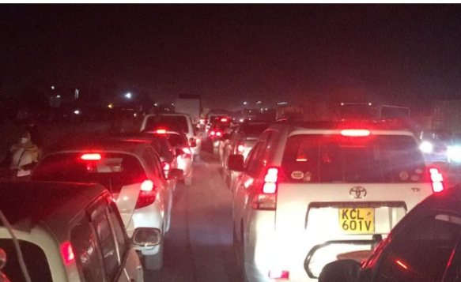

Environment & Energy
The Invisible Threat We Breathe: How Air Pollution Is Affecting Our Health
The air may look clean, but is it safe?
Every morning, thousands of Kenyans leave their homes to go to work, school and other daily activities. Along busy roads, pedestrians squeeze between moving vehicles, matatus release exhaust fumes, and roadside traders spend hours exposed to dust and smoke.
For many people, this has become part of everyday life. We cover our noses when the smoke becomes too much, walk faster past dusty roads and occasionally complain about unpleasant smells. But how often do we stop to think about what we are actually breathing?
Air pollution is one of the environmental threats that often goes unnoticed because its effects are not always immediately visible.The danger is not limited to people living in industrial areas. Pedestrians, traffic police officers, boda boda riders, street vendors, schoolchildren and commuters may all experience exposure. Long-term exposure to polluted air can contribute to asthma, chronic respiratory illnesses, heart disease and other health complications.

The Kenya Meteorological Department's 2025 State of the Climate report also examined Nairobi's air quality. Its monitoring results showed that all 11 assessed sites exceeded the WHO annual PM2.5 guideline in 2025, although they remained within Kenya's national annual standard.
This distinction is important simply because meeting a national regulatory limit does not automatically mean that air quality is safe according to the more protective WHO health guideline.
"Long-term exposure to polluted air can cause serious respiratory and cardiovascular diseases, increase the risk of lung cancer and even contribute to premature deaths. Kenyan cities must prioritise cleaner public transport, proper waste management, stricter industrial emission controls and public awareness to protect people's health." Madam Mercyline Akumu, pharmacist.

Environmental health experts emphasise that air pollution should be treated as a public health issue rather than merely an environmental inconvenience. Research by Otienoh Oguge and colleagues, published in Environmental Epidemiology in 2024, connects Nairobi's fine particulate matter exposure with significant health risks. Their findings point to the need for stronger air-quality monitoring and measures to reduce emissions, particularly from motor vehicles.